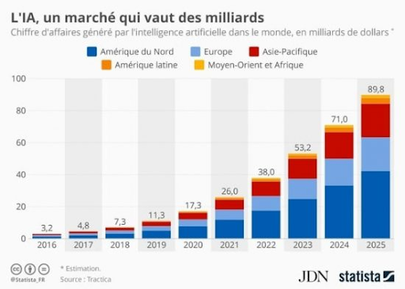

Qui s'interesse a ce marché ?
Les entreprises (au travers des chefs d’entreprises) :
Une étude européenne menée par Davies Hickman Partner Ltd pour l'éditeur Odigo, fournisseur de solutions CCaaS (Contact Center as a Service), s'est penchée sur l'adoption de l'intelligence artificielle (IA) dans les centres de contact et sa perception par les chefs d'entreprise. Menée en mars 2021 auprès de plus de 1000 dirigeants dans six pays européens, dont la France, l'enquête confirme le haut niveau d'intérêt pour ces technologies, notamment en France. Neuf dirigeants français sur dix sont ainsi convaincus qu'elle peut améliorer l'expérience client, plaçant le pays au deuxième rang après l'Espagne, où ce taux atteint 97%. Néanmoins, l'enquête révèle également la persistance de freins.
Les résultats montrent une nette volonté des entreprises européennes d'adopter des technologies d'IA dans leurs centres de contact. Ainsi, 89% des dirigeants interrogés prévoient d'investir dans ce domaine lors des deux ans qui viennent. Parmi les usages envisagés figurent la qualification automatique des clients (65%), le routage intelligent des demandes (61%) et les analyses de tendances comportementales (60%). Pour les répondants, il s'agit classiquement de réduire les coûts de leurs centres de contacts (81 %) et d'améliorer les opérations (78 %), mais aussi de mettre en place un meilleur support client (70 %). Plus de huit sondés sur dix estiment également que l'IA crée de la valeur à court et moyen terme, que ce soit en matière de gestion intelligente de l'expérience, de performance client, de profils clients omnicanaux ou encore d'automatisation des processus et des données.
L’État :
Le gouvernement considère, au fil de diverses initiatives, que l'intelligence artificielle est une technologie d'avenir essentielle. Logiquement, les deux sujets ne pouvaient que se rencontrer.
Client particulier : l’intelligence artificielle au quotidien.
Sans nous en rendre compte, l’Intelligence Artificielle est bien présente dans notre quotidien de manière subtile, et ce depuis quelques années. Contrairement à ce que les gens ont tendance à penser, l’IA n’est pas forcément synonyme de robots ou de machines autonomes. Certes, ces versions du Big Data sont les plus visibles. Mais en définissant son concept comme des moyens innovants de réduire ou d’automatiser des tâches ingrates, on peut rapidement comprendre qu’elle peut prendre plusieurs formes. Mais alors, de quelle façon l’intelligence artificielle se met-elle au service de notre quotidien ?
Ce n’est plus un secret pour personne, l’Intelligence Artificielle se trouve en plein cœur de la mobilité futuriste. Elle se matérialise par la création des voitures autonomes qui s’adaptent à de multiples situations difficiles. Ces dernières diminuent considérablement les risques d’accidents et d’erreur souvent faite par l’homme au volant. Elles intègrent également les préférences automatiques du conducteur, à ne citer que l’activation des sièges chauffants quand il faut froid ou pendant la nuit. Les modèles les plus innovants vont même jusqu’à assurer une conduite automatique en toute sécurité.
Du côté des vendeurs.

|
Lorsqu'il y a un seul vendeur sur un marché, on parle de monopole. Lorsqu'il y a un seul acheteur on parlera de monopsone. Dans ces circonstances le vendeur (ou l'acheteur) unique est en mesure de déterminer le fonctionnement du marché ; prix, quantités échangées, ...C'est alors la puissance publique qui déterminera les modalités des échanges.
|
Quel besoin ?
L'IA transforme déjà les attentes des clients. Pensez au consommateur qui utilise Uber, Google et Amazon. S'il entre dans un grand magasin pour acheter un costume, que faut-il pour lui fournir le même niveau de service que celui auquel il s'est habitué ? Vous possédez des données sur eux et ils s'attendent à ce que vous les utilisiez pour fournir systématiquement un service rapide et personnalisé. L’IA anticipe les nouvelles opportunités et dépassent les attentes des clients en identifiant leurs besoins avant qu'ils ne les expriment eux-mêmes. Outre le secteur du commerce, l'IA peut s'avérer très utile dans le secteur de l’économie ou de l'investissement, elle peut par exemple prévoir des chiffres ou des évolutions futures grâce aux données présentent actuellement.
|

|
Grâce à ce graphique on peut observer des prédictions quant au chiffres futur de l’ia dans les différentes régions du monde impliqué dans ce domaine. Malgré les différences de puissance entre ces régions, on constate une augmentation très forte. Les 3 pays comptant le plus de chiffres d'affaires générés par l’IA sont L’Amérique du Nord, l’Europe, et l’Asie. L’Amérique comptera plus de 40 millard de chiffres d'affaires en 2025 dans le secteur de l’IA.
|
Les externalités négative :
Les chercheurs ont étudié le cycle de vie de plusieurs modèles d'entraînement d’IA, parmi les plus populaires (le « Transformer model », ELMo, BERT, l'ORET, le GPT-2…). Ils les ont entraînés à partir d’une masse considérable de données, sur un seul microprocesseur, pendant une journée, Afin de calculer la quantité d’énergie requise pour utiliser des modèles d'entraînement d’Ia, puis ont multiplié les résultats par le nombre d’heures et de microprocesseurs utilisés dans le cadre des recherches en IA. Ils ont ainsi pu estimer ce que consomment les méthodes de deep learning, en équivalent CO2, sur la base du mix énergétique moyen aux USA (17 % d'énergies renouvelables, 35 % de gaz, 27 % de charbon, et 19 % de nucléaire).
Les externalités positive :
Réchauffement climatique, effondrement de la biodiversité, pollution généralisée.… En 2021, la crise écologique a fait plus que jamais peser une lourde menace sur l’avenir. Pour corriger le tir, les algorithmes pourraient être de précieux alliés. Depuis quelques années, elle a prouvé qu’elle pouvait faire du bien à la planète. Elle est utile notamment pour réduire la quantité de pesticides déversés dans les champs ou pour recenser et surveiller les espèces en voie de disparition.
Tableau et graphique des entreprises